Hebius
The genus Hebius (family Colubridae) has 50 living species in SnakeList (none venomous), recorded in 16 countries.
- 50living species
- 50non-venomous
- 16countries
About the genus
A genus of the family Colubridae (colubrids).
Species
Showing 50 species
 Andrea's KeelbackHebius andreae
Andrea's KeelbackHebius andreae Annam KeelbackHebius annamensis
Annam KeelbackHebius annamensis Boulenger's KeelbackHebius boulengeri
Boulenger's KeelbackHebius boulengeri- No photo yetBridled KeelbackHebius frenatus
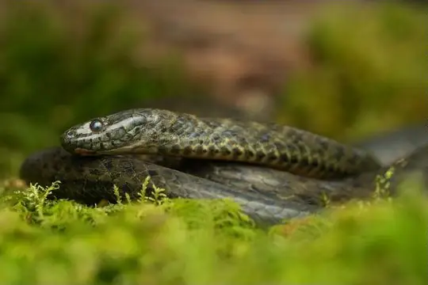
Chin Hills KeelbackHebius venningi- No photo yetCrying KeelbackHebius lacrima
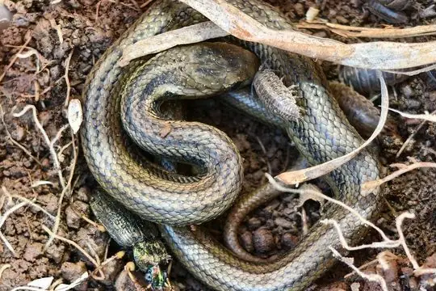
Eight-lined KeelbackHebius octolineatus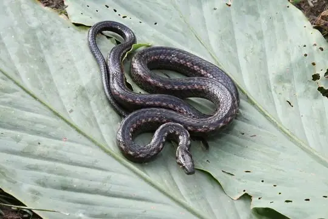
Fire-back KeelbackHebius igneus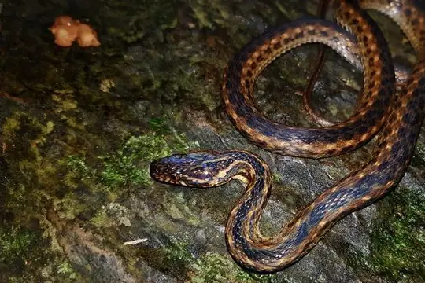
Groundwater's KeelbackHebius groundwateri- No photo yetGunung Kerinchi KeelbackHebius kerinciensis
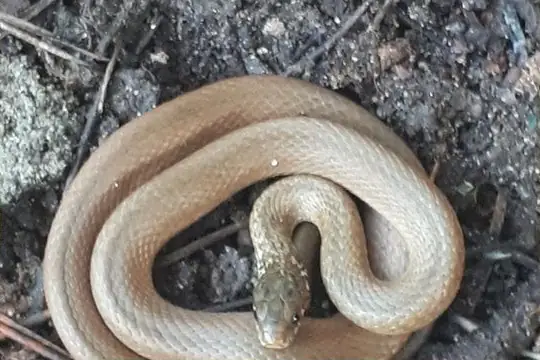
Japanese KeelbackHebius vibakari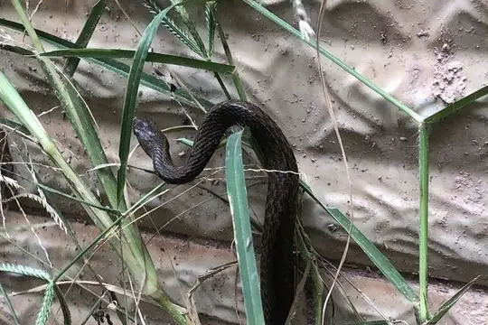
Johann's KeelbackHebius johannis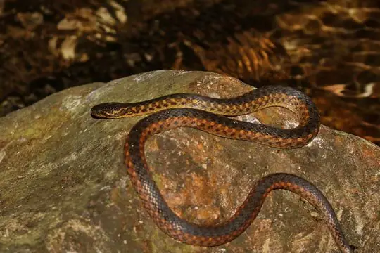
Karenland KeelbackHebius terrakarenorum Khasi KeelbackHebius khasiensis
Khasi KeelbackHebius khasiensis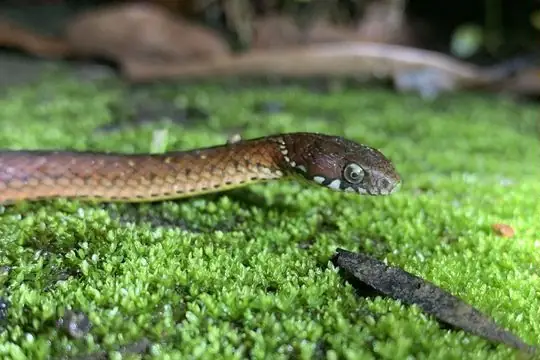
Kosempo KeelbackHebius sauteri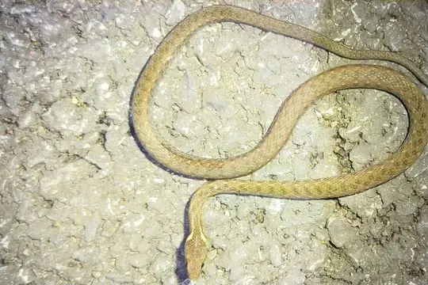
Kuatun KeelbackHebius craspedogaster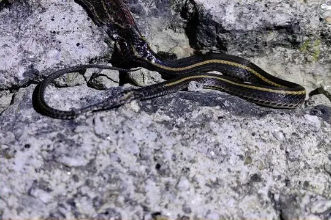
Kutkai KeelbackHebius bitaeniatus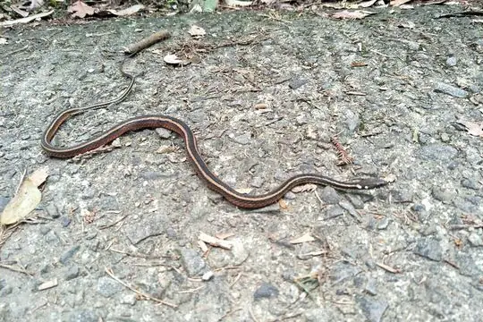
Maki's KeelbackHebius miyajimae Malayan Mountain KeelbackHebius inas
Malayan Mountain KeelbackHebius inas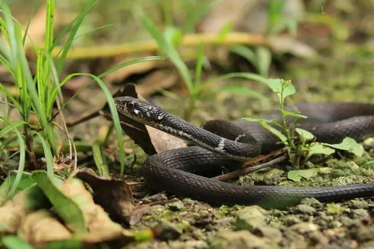
Miyako KellbackHebius concelarus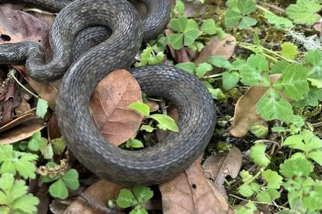
Modest KeelbackHebius modestus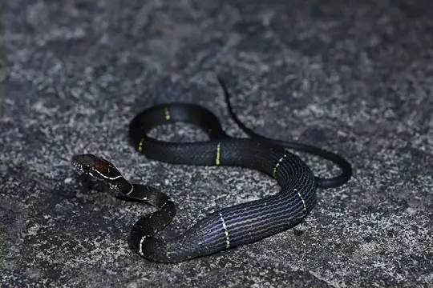
Mount Omei KeelbackHebius optatus- No photo yetNicobar Island KeelbackHebius nicobariensis
- No photo yetNilgiri KeelbackHebius beddomei
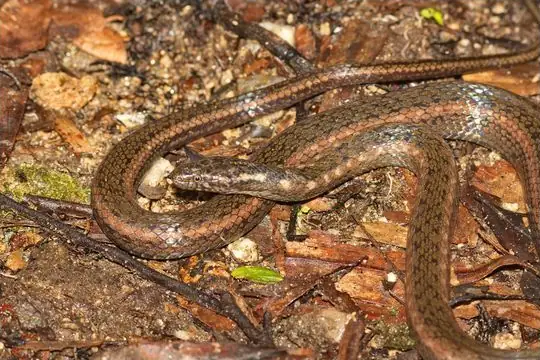
Northern KeelbackHebius deschauenseei Peters' KeelbackHebius petersii
Peters' KeelbackHebius petersii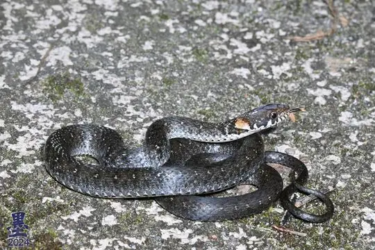
Pope's KeelbackHebius popei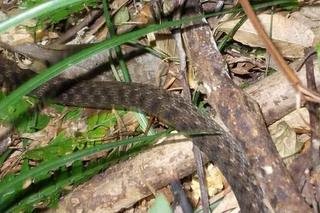
Pryer's KeelbackHebius pryeri Red Mountain KeelbackHebius sanguineus
Red Mountain KeelbackHebius sanguineus Sabah KeelbackHebius flavifrons
Sabah KeelbackHebius flavifrons Sangzhi Keelback SnakeHebius sangzhiensis
Sangzhi Keelback SnakeHebius sangzhiensis Sarasin's KeelbackHebius sarasinorum
Sarasin's KeelbackHebius sarasinorum Sarawak KeelbackHebius sarawacensis
Sarawak KeelbackHebius sarawacensis- No photo yetSulawesi KeelbackHebius celebicus
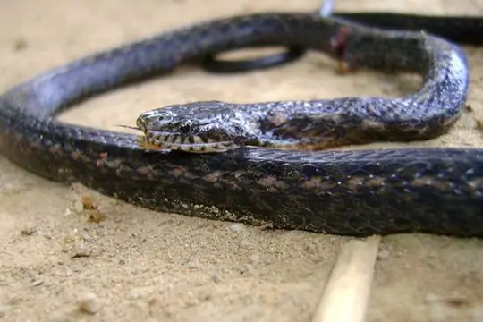
Taron KeelbackHebius taronensis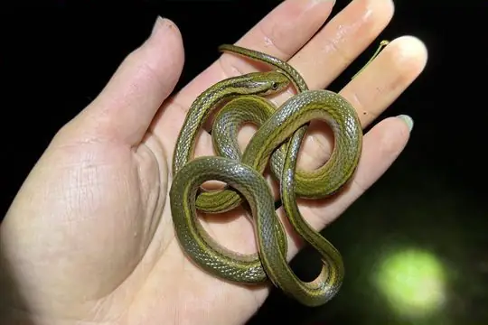
Tengchong Keelback SnakeHebius septemlineatus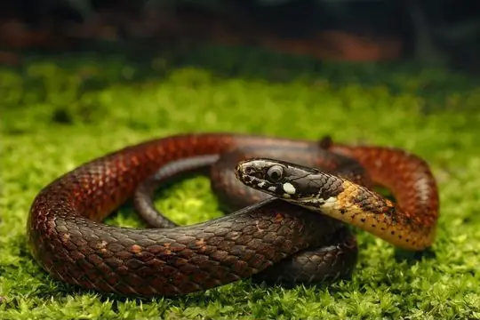
Tonkin KeelbackHebius atemporalis Vietnam Water SnakeHebius chapaensis
Vietnam Water SnakeHebius chapaensis- No photo yetViper-like KeelbackHebius viperinus
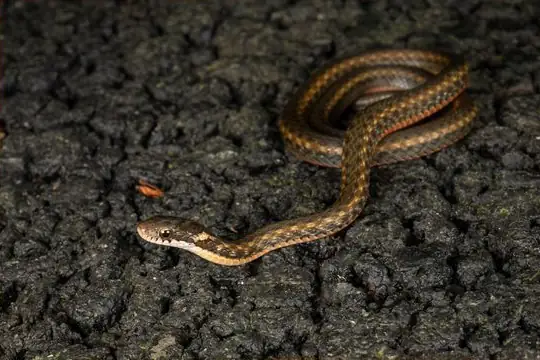
Wa Shan KeelbackHebius metusia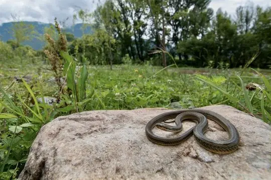
Weixi Keelback SnakeHebius weixiensis White-lipped KeelbackHebius leucomystax
White-lipped KeelbackHebius leucomystax- No photo yetWynad KeelbackHebius monticola
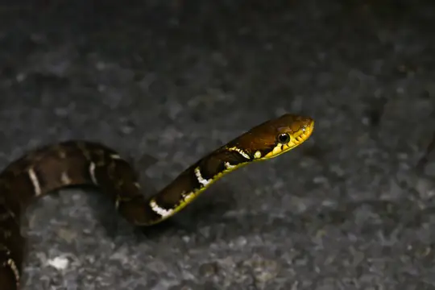
Yaeyama KeelbackHebius ishigakiensis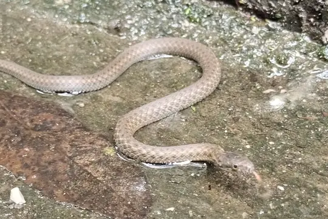
Yanbian Keelback SnakeHebius yanbianensis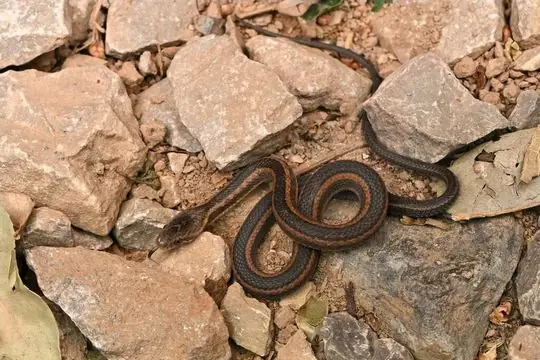
Youjiang Keelback SnakeHebius youjiangensis Yunnan KeelbackHebius clerki
Yunnan KeelbackHebius clerki- No photo yetYunnan KeelbackHebius parallelum
- No photo yetHebius arquus
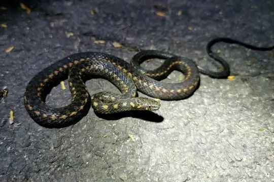
Hebius nigriventer
No snakes in Hebius match.
About the genus Hebius
Compare its species
Its living species side by side. Lengths come only from SnakeList’s reviewed, sourced accounts; the others are left blank rather than guessed.
Show the table of all 50 species
| Species | Venom | Recorded in | Adult length (reviewed accounts) |
|---|---|---|---|
| Andrea's Keelback Hebius andreae | Non-venomous | 2 countries (Asia) | No reviewed account yet |
| Annam Keelback Hebius annamensis | Non-venomous | 2 countries (Asia) | No reviewed account yet |
| Boulenger's Keelback Hebius boulengeri | Non-venomous | 5 countries (Asia) | No reviewed account yet |
| Bridled Keelback Hebius frenatus | Non-venomous | 2 countries (Asia) | No reviewed account yet |
| Chin Hills Keelback Hebius venningi | Non-venomous | 3 countries (Asia) | No reviewed account yet |
| Crying Keelback Hebius lacrima | Non-venomous | 2 countries (Asia) | No reviewed account yet |
| Eight-lined Keelback Hebius octolineatus | Non-venomous | 1 country (Asia) | No reviewed account yet |
| Fire-back Keelback Hebius igneus | Non-venomous | 3 countries (Asia) | No reviewed account yet |
| Groundwater's Keelback Hebius groundwateri | Non-venomous | 1 country (Asia) | No reviewed account yet |
| Gunung Kerinchi Keelback Hebius kerinciensis | Non-venomous | 1 country (Asia) | No reviewed account yet |
| Japanese Keelback Hebius vibakari | Non-venomous | 4 countries (Asia) | No reviewed account yet |
| Johann's Keelback Hebius johannis | Non-venomous | 1 country (Asia) | No reviewed account yet |
| Karenland Keelback Hebius terrakarenorum | Non-venomous | 1 country (Asia) | No reviewed account yet |
| Khasi Keelback Hebius khasiensis | Non-venomous | 7 countries (Asia) | No reviewed account yet |
| Kosempo Keelback Hebius sauteri | Non-venomous | 1 country (Asia) | No reviewed account yet |
| Kuatun Keelback Hebius craspedogaster | Non-venomous | 1 country (Asia) | No reviewed account yet |
| Kutkai Keelback Hebius bitaeniatus | Non-venomous | 3 countries (Asia) | No reviewed account yet |
| Maki's Keelback Hebius miyajimae | Non-venomous | 1 country (Asia) | No reviewed account yet |
| Malayan Mountain Keelback Hebius inas | Non-venomous | 2 countries (Asia) | No reviewed account yet |
| Miyako Kellback Hebius concelarus | Non-venomous | 1 country (Asia) | No reviewed account yet |
| Modest Keelback Hebius modestus | Non-venomous | 4 countries (Asia) | No reviewed account yet |
| Mount Omei Keelback Hebius optatus | Non-venomous | 2 countries (Asia) | No reviewed account yet |
| Nicobar Island Keelback Hebius nicobariensis | Non-venomous | 1 country (Asia) | No reviewed account yet |
| Nilgiri Keelback Hebius beddomei | Non-venomous | 1 country (Asia) | No reviewed account yet |
| Northern Keelback Hebius deschauenseei | Non-venomous | 1 country (Asia) | No reviewed account yet |
| Peters' Keelback Hebius petersii | Non-venomous | 2 countries (Asia) | No reviewed account yet |
| Pope's Keelback Hebius popei | Non-venomous | 2 countries (Asia) | No reviewed account yet |
| Pryer's Keelback Hebius pryeri | Non-venomous | 1 country (Asia) | No reviewed account yet |
| Red Mountain Keelback Hebius sanguineus | Non-venomous | 1 country (Asia) | No reviewed account yet |
| Sabah Keelback Hebius flavifrons | Non-venomous | 2 countries (Asia) | No reviewed account yet |
| Sangzhi Keelback Snake Hebius sangzhiensis | Non-venomous | 1 country (Asia) | No reviewed account yet |
| Sarasin's Keelback Hebius sarasinorum | Non-venomous | 1 country (Asia) | No reviewed account yet |
| Sarawak Keelback Hebius sarawacensis | Non-venomous | 2 countries (Asia) | No reviewed account yet |
| Sulawesi Keelback Hebius celebicus | Non-venomous | 1 country (Asia) | No reviewed account yet |
| Taron Keelback Hebius taronensis | Non-venomous | 2 countries (Asia) | No reviewed account yet |
| Tengchong Keelback Snake Hebius septemlineatus | Non-venomous | 1 country (Asia) | No reviewed account yet |
| Tonkin Keelback Hebius atemporalis | Non-venomous | 1 country (Asia) | No reviewed account yet |
| Vietnam Water Snake Hebius chapaensis | Non-venomous | 3 countries (Asia) | No reviewed account yet |
| Viper-like Keelback Hebius viperinus | Non-venomous | 1 country (Asia) | No reviewed account yet |
| Wa Shan Keelback Hebius metusia | Non-venomous | 1 country (Asia) | No reviewed account yet |
| Weixi Keelback Snake Hebius weixiensis | Non-venomous | 1 country (Asia) | No reviewed account yet |
| White-lipped Keelback Hebius leucomystax | Non-venomous | 2 countries (Asia) | No reviewed account yet |
| Wynad Keelback Hebius monticola | Non-venomous | 1 country (Asia) | No reviewed account yet |
| Yaeyama Keelback Hebius ishigakiensis | Non-venomous | 1 country (Asia) | No reviewed account yet |
| Yanbian Keelback Snake Hebius yanbianensis | Non-venomous | 1 country (Asia) | No reviewed account yet |
| Youjiang Keelback Snake Hebius youjiangensis | Non-venomous | 1 country (Asia) | No reviewed account yet |
| Yunnan Keelback Hebius clerki | Non-venomous | 5 countries (Asia) | No reviewed account yet |
| Yunnan Keelback Hebius parallelum | Non-venomous | 3 countries (Asia) | No reviewed account yet |
| Hebius arquus | Non-venomous | 1 country (Asia) | No reviewed account yet |
| Hebius nigriventer | Non-venomous | 2 countries (Asia) | No reviewed account yet |